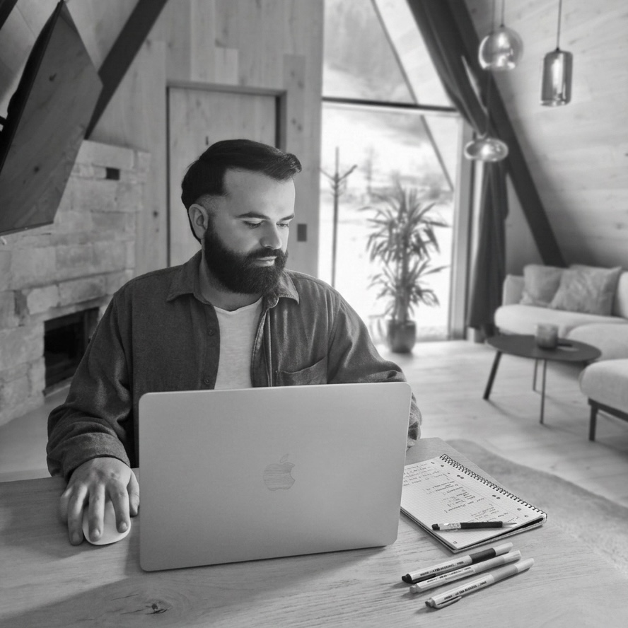

Hey there, I'm Ioannis! I am a passionate Frontend Developer who loves bridging the gap between design and engineering. My drive comes from transforming complex problems into clean, intuitive, and pixel-perfect user interfaces.
} @else {Hallo, ich bin Ioannis! Ich bin ein leidenschaftlicher Frontend-Entwickler, der es liebt, die Lücke zwischen Design und Technik zu schließen. Mein Antrieb ist es, komplexe Probleme in saubere, intuitive und pixelgenaue Benutzeroberflächen zu verwandeln.
}Based in Munich, Germany. I am fully equipped for remote work, but also open to hybrid setups and exciting new opportunities.
} @else {Ansässig in München. Ich bin bestens für Remote-Arbeit ausgestattet, aber auch offen für hybride Modelle und spannende neue Möglichkeiten.
}I bring a strong growth mindset and am always eager to dive into new technologies. Continuous learning is an essential part of my daily workflow.
} @else {Ich bringe eine hohe Lernbereitschaft mit und arbeite mich gerne in neue Technologien ein. Kontinuierliches Dazulernen ist ein wesentlicher Bestandteil meines Arbeitsalltags.
}I tackle challenges with analytical thinking and creativity. I view every bug as an opportunity to grow and always strive for elegant, maintainable solutions.
} @else {Ich gehe Herausforderungen mit analytischem Denken und Kreativität an. Ich sehe jeden Bug als Chance, mich weiterzuentwickeln, und strebe stets nach eleganten, wartbaren Lösungen.
}